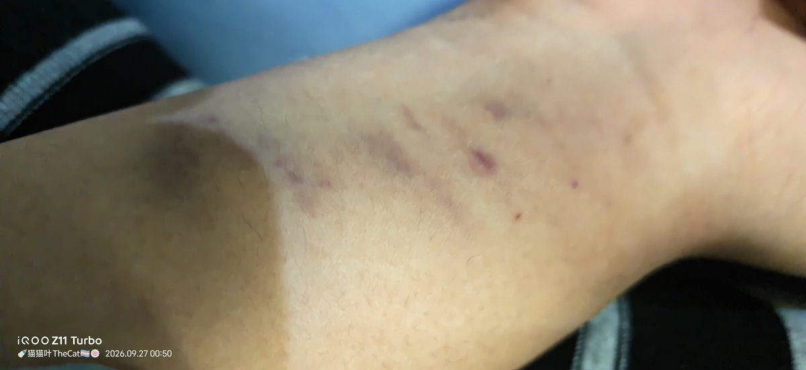
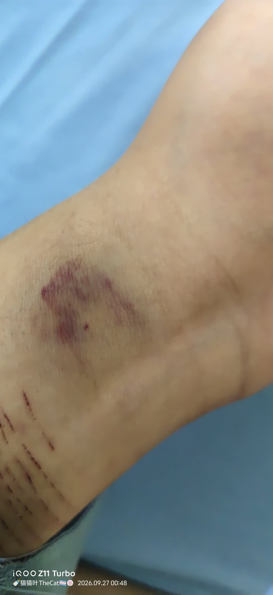

溯音 🍥
@yangion73
@LeavesMao 之前我吞药已经昏了被父母拖着到车上，脚在楼梯和沥青路上拖的全是伤，血肉模糊，到现在还有留疤😞


🍼猫猫叶TheCat🍥🏳️⚧️
@LeavesMao
大概描述一下（我看到和感受到的）...
不知道在哪里的台子上面我疯狂哭喊，一群人把我按着，强行把一根直径和我手腕一样粗的管子往里插，很强烈的窒息和不适感，我真的好想告诉他们我很难受很难受......
图片是被束缚勒出来的印子😿😿😿
不要磕药自杀😿😿😿我也不知道自己为什么当时要吃那么多😿😿😿 https://t.co/CEN7CB6nTh https://t.co/a2vuJqj8df